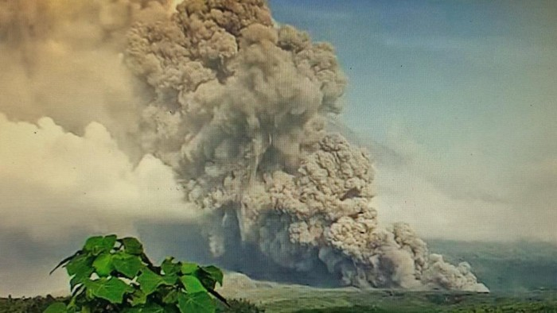

Jakarta - Gunung Semeru kembali erupsi dan mengeluarkan awan panas. Ribuan warga kini mengungsi di sejumlah titik.

Semeru erupsi terjadi sekitar Minggu (4/12) pukul 02.46 WIB dengan tinggi kolom abu 1.500 meter di atas puncak gunung sekitar 5.176 meter di atas permukaan laut. Kolom abu teramati berwarna kelabu dengan intensitas sedang hingga tebal ke arah tenggara dan selatan. Erupsi ini terekam di seismograf dengan amplitudo maksimum 35 mm dan durasi 0 detik.
Berikut fakta-fakta Semeru erupsi:
Status Gunung Semeru Naik Jadi Level 4
PVMBG Badan Geologi ESDM menaikkan status Gunung Semeru dari siaga menjadi awas. Kenaikan dari level 3 siaga ke level 4 itu terhitung mulai siang ini.
Dilansir detikJateng, kenaikan status dimulai pukul 12.00 WIB. Kepala PVMBG Badan Geologi Hendra Gunawan mengimbau agar tidak ada aktivitas dalam radius 8 km dari puncak Gunung Semeru.
"Tidak ada aktivitas dalam radius 8 km dari puncak, dan sektoral arah Tenggara (Besuk Kobokan dan Kali Lanang) sejauh 19 km dari puncak. Surat resmi peningkatan status segera disampaikan," ujar Hendra Gunawan dalam keterangan tertulis.
Awan Panas Sampai ke Jembatan Gladak Perak
Awan panas guguran (APG) Semeru sudah menyentuh Jembatan Gladak Perak di Sumber Wuluh, Candipuro. Jembatan Gladak Perak ini bahkan sempat putus akibat terjangan erupsi Gunung Semeru.
Terjangan ini sempat terjadi pada 4 Desember 2021. Hori, salah satu warga sekaligus tokoh masyarakat di Desa Sumber Wuluh yang dekat dengan lokasi Jembatan Gladak Perak, menyatakan APG sudah mencapai Gladak Perak pada pukul 12.00 WIB.
"Jam 12 siang sampai Gladak Perak. Kalau situasi terkini, saya nggak berani lihat ke sana lagi. Saya sudah naik ini, menghindari APG," katanya seperti dilansir detikJatim, Minggu (4/12/2022).
Menurutnya, hingga pukul 13.14 WIB, situasi di dusun terdekat dengan Gladak Perak sudah kosong dari penduduk. Sudah ada imbauan evakuasi dari Pemkab dan BPBD Lumajang agar warga segera mengungsi.
"Sudah kosong. Saya sendiri juga sudah keluar rumah, takut dengan awan panas itu," ujar Hori.
Jembatan Gantung Gladak Perak di Desa Sumber Wuluh, Candipuro, Lumajang sempat putus setelah diterjang erupsi Gunung Semeru pada 4 Desember 2021. Jembatan sepanjang 120 meter itu penghubung Kabupaten Lumajang dan Malang.
Ribuan Warga Mengungsi
Gubernur Jawa Timur Khofifah Indar Parawansa menyebut hingga saat ini tercatat 2.219 warga mengungsi imbas erupsi Gunung Semeru. Pengungsi itu tersebar di 12 titik lokasi.
"Saat ini setidaknya ada dua belas titik pengungsian dengan jumlah pengungsi 2.219 jiwa (sedang proses pendataan)," kata Khofifah dalam unggahannya di Instagram yang sudah diizinkan oleh Biro Adpim, dilansir detikjatim, Minggu (4/12/2022).
Khofifah mengungkapkan, saat ini pihaknya terus berkoordinasi dengan Bupati Lumajang Thoriqul Haq serta BPBD Jatim untuk mendirikan dapur umum.
"Saya juga koordinasi BPBD Jatim agar langsung turun melakukan evakuasi dan mendirikan dapur umum. Sesuai koordinasi dengan Bupati Lumajang dapur umum dianjurkan di Pronojiwo khususnya daerah yang dekat dengan Desa Supit Urang yang terdampak paling parah," jelas Khofifah.
Sementara itu, Kepala Pelaksana (Kalaksa) BPBD Jatim, Gatot Soebroto terus berkoordinasi dengan semua pihak. Baik TNI, Polri, BPBD Kabupaten Lumajang, dan relawan.
"Menyiapkan logistik dan tempat pengungsian sesuai dengan perkembangan di lapangan, serta mencari informasi bilamana ada warga yang hilang atau terpisah dari keluarganya. Tak lupa membagi dan mengingatkan warga untuk menggunakan masker serta mengecek kesehatannya," kata Gatot.
Semburan Erupsi Semeru Timbun Rumah Warga
Semburan awan panas juga menimbun sejumlah rumah warga di Dusun Kajar Kuning, Desa Sumberwuluh, Candipuro, Lumajang. Meski tertimbun material vulkanik, petugas BPBD masih belum bisa mendekati lokasi itu dari jarak dekat karena material vulkanik erupsi Gunung Semeru masih sangat panas.
Kepala BPBD Kabupaten Lumajang Patria Dwi Hastiadi mengatakan bahwa asesmen masih dilakukan karena material APG Semeru memang masih panas. Terutama di zona merah yang tertimbun material.
"Jadi kerusakan sementara hasil asesmen tadi karena material APG masih panas. Sementara ini beberapa rumah di zona merah tertimbun dan 2 jembatan tertimbun tapi timbunan itu merusak atau tidak jika suasana kondusif kami akan lakukan asesmen lanjutan," ujarnya kepada detikJatim, Minggu (4/12/2022).